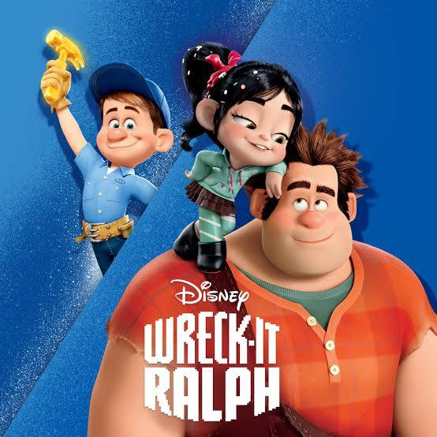
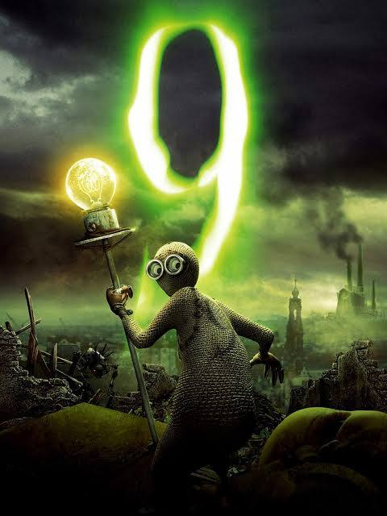

This is a Halloween v Christams movie. The main character Jack Skellington has trouble figuring out how to make halloween better each year so he decides to use Christams as a backup for halloween. This ends up backfiring and ruining his entire holiday, he then recognises he is the Pumpkin King and halloween is his passion.
Despicable Me
Despicable Me is a story of a villain named Gru, he wants to take over the moon with his small yellow minions that speak a unique language. He eventually gets the help of 3 girls from an orphanage to steal a shrink ray from another villain. He then creates a bond with his daughters and creates a life with all of them after figuring out he wants to be a dad to these girls.
Wreck-It-Ralph

Wreck-It-Ralph is a movie about a game character named Ralph who never can win his game because he's the villian and he's meant to lose. So he goes to other games to win their awards since he just wants to be the winner for once. He ends up going a\to a game he doesn't belong in and unleashes an alien invasion amoung the other games. He has to fix this problem and save his friends before they lose everything.
The Book of Life
The Book of Life tells the story of 2 friends chasing a girl. These boys are really close friends and basically spent their lives together. One guy has his family forcing him to be a bullfighter and the other being a fighter for his village. The bullfighter doesn't want to follow along his family, he wants to be a musician and the fighter wants to be like his dead father and protect everyone.
9

The theme about the movie 9 is a scientist put his life into a bunch of dolls in a robot apocalypse. These dolls have to work together to destory the motherboard of the main robot system controlling the robot army.